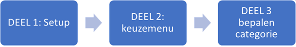
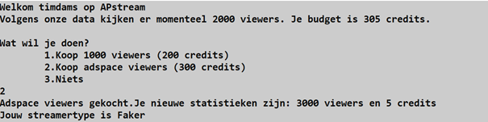

Intro
Een bekende streamingdienst twim.tv heeft jou gevraagd om een softwarepakket te ontwikkelen dat hun klanten kunnen gebruiken terwijl ze video’s streamen. De applicatie zal de streamers helpen om viewers bij te kopen en te zien hoe goed hun stream het doet.
De applicatie bestaat uit 3 duidelijke delen die alle 3 steeds zullen uitgevoerd worden:

Belangrijke afspraken * Strings worden altijd m.b.v. string interpolatie naar het scherm gestuurd. * Gebruik constanten waar nodig
Deel 1: initialisatie
Wanneer de applicatie opstart, groet deze de gebruiker. Hierbij wordt de gebruikersnaam uit het systeem (m.b.v. de correcte Environment-eigenschap) uitgelezen.
Voorts worden volgende willekeurige getallen (uiteraard automatisch gegenereerd) aangemaakt: * Het aantal viewers dat naar de stream kijkt: dit kan 1000, 2000, 3000 , 4000 of 5000 zijn. Dit wordt willekeurig bepaald. * Het huidige budget uitgedrukt in credits van de gebruiker: dit is een willekeurig geheel getal gelegen tussen 100 (100 inbegrepen) tot en met 600.
Deel 3: Menu
In dit finale gedeelte wordt de “gezondheid” van de streamer bepaald. Het aantal viewers, budget en aankopen in deel 2 bepalen hoe gezond een streamer is. Er zijn 4 soorten streamers: 1. Beginner 2. Gevorderde 3. Faker 4. Onbekend
De applicatie toont tot welke categorie de streamer zich bevind waarbij deze categorie als een enum intern wordt voorgesteld. * Beginner: je hebt 200 of minder credits en je hebt 4000 of minder viewers * Gevorderde: je hebt 5000 of meer viewers en je hebt 1 aankoop gedaan in deel 2 * Faker: je hebt 4000 of minder viewers en je hebt in deel 2 adspace viewers gekocht * Onbekend: je voldoet niet aan 1 van voorgaande categorieën Indien 2 of meer categorieën gelden voor een gebruiker, dan wordt de bovenste uit deze lijst toegewezen.

Indien de gebruiker als “Faker” wordt bestempeld krijg je de vraag of je voor 100 credits het profiel wil omgezet zien worden naar “Gevorderde”. Indien de gebruiker met “nee” antwoordt sluit het programma af. Indien de gebruiker “ja” antwoordt komt er op het scherm “Word beter!” en dan sluit het programma af.